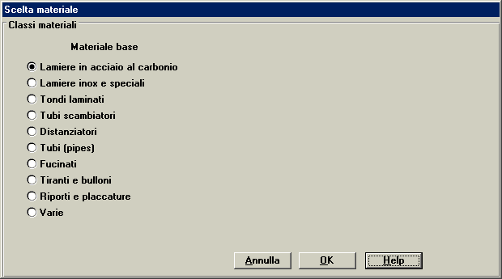
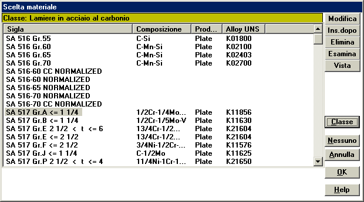
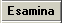
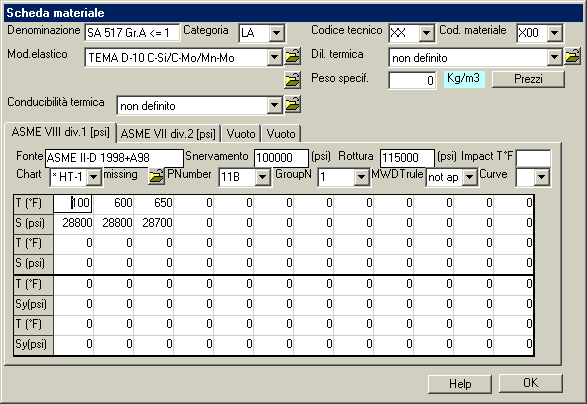
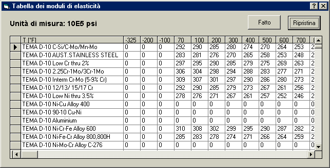

Questa libreria riporta i dati meccanici e fisici di tutti i materiali ASME. Essa è concepita anche per gestire i dati dei materiali in accordo anche ad altre normative; tuttavia i dati caricati attualmente sono largamente incompleti.
I materiali sono classificati in classi, come è visibile nella finestra seguente. Scegliere la classe desiderata e dare OK.

Nota: Qualora l'applicazione che chiama la libreria materiali avesse già definito la classe applicabile, questa finestra non apparirà, e si sarà portati immediatamente alla finestra della Scelta del materiale. Tuttavia si potrà comunque accedere a questa finestra per cambiare la classe tramite il pulsante Classe.

Le funzioni dei pulsanti di questa finestra sono presentate qui di seguito.

Cambio della classe preselezionata, al fine di scegliere un materiale di un'altra classe.
Serve per annullare ogni selezione di materiale fatta precedentemente nell'applicazione chiamante. In altre parole si dichiara che non è definito alcun materiale nel contesto dell'applicazione chiamante.
Questa scheda viene utilizzata per assegnare tutti i dati specifici del singolo materiale, o tramite imputazione diretta del dato, o tramite riferimento a dati tabellari di carattere generale.

Essi sono:
Questi codici sono stati previsti per l'interfacciamento con la Distinta Base e la gestione delle Richieste Materiali. Ad oggi non sono usati.
Questo pulsante richiama il modulo di gestione dei listini prezzi di approvvigionamento.
Questo schedario, composto dal numero fisso quattro di schede, accoglie i dati del materiale che sono funzione del codice di calcolo applicabile. Quindi, per un dato materiale, sono specificabili i dati relativi ad al più quattro codici. L'uso quasi esclusivo che viene fatto di questa possibilità è quello di specificare i dati validi rispettivamente per la div.1 e per la div.2 del codice ASME-VIII.
Per intitolare ad un determinato codice fra quelli previsti una scheda vuota bisogna cliccare con il pulsante destro del mouse sull'etichetta della scheda.
Questi dati consentono di determinare le eventuali esenzioni dalle prrove di resilienza.
Le regole di esenzione sono funzione della classificazione del materiale operata dal Codice ASME. Per la div.1 viene quindi specificato quale capitolo (tra UCS, UNF, UHA, o UHT) è applicabile. Per la div.2, per la quale le regole relative alle prove di resilienza sono contenute tutte nella Part AM, viene specificato a quale tabella (tra ACS-1, ANF-1, AHA-1, ABM-1, ABM-2, o AGT) appartiene il materiale in questione.
Il dato da fornire è funzione del codice e della regola.
Riportare 'A','B','C' o 'D' in accordo alla Fig. UCS-66 per la div.1 e AM-218.1 per la div.2. Nel caso della div.1, ove trattisi di bulloneria, in applicazione della nota (e), riportare 'bolts'.
Questa scheda viene utilizzata per i seguenti tipi di dati, di carattere generale, forniti in tabelle a doppia entrata:

E' possibile memorizzare in banca dati il prezzo di acquisto dei materiali base, in modo da poter elaborare più rapidamente un preventivo di vendita.
Per ogni classe di materiale, e per ogni materiale all'interno della classe, il prezzo per unità di peso sarà funzione di alcune caratteristiche geometriche del grezzo, sarà funzione del momento storico, del fornitore, e di molti altri fattori, quali i requisiti qualitativi e le quantità di acquisto. E' quindi previsto di memorizzare per ogni materiale un numero illimitato di quotazioni, che saranno classificate in base a:
La definizione dei parametri primari e secondari è una funzione della classe:
AAAAA
AAAAA
AAAAA
AAAAA
La banca dati gestisce anche i costi di alcune lavorazioni esterne tipiche, quali la formatura fondi e la calandratura su forte spessore.